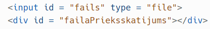
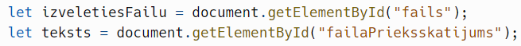
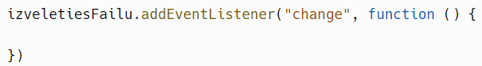
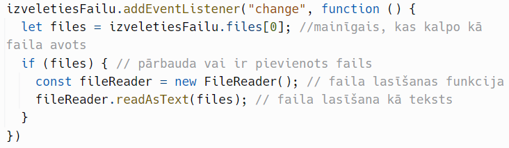
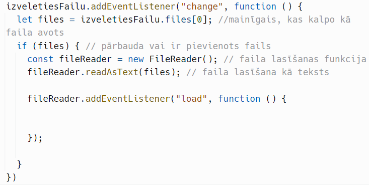
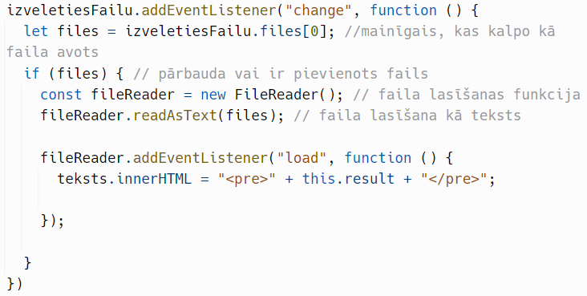
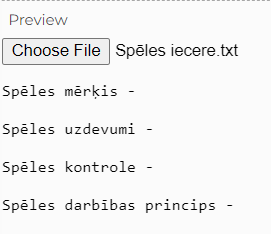

Teksta datnes satura parādīšana mājaslapā izmantojot <pre> elementu
Datņu satura parādīšana mājaslapā var atvieglot informācijas attēlošanu lapā vai izveidot iespēju nedaudz personalizēt lapu izmantojot attēlus.
Lai attēlotu teksta datnes saturu lapā:
- solis - HTML daļā izveido datnes ievades lauku un datnes satura parādīšanas lauku:

- solis - JavaScript daļā izveido mainīgos, kas norādīs, ka darbosies ar izveidotajiem HTML elementiem:

- solis - faila elementam pievieno notikumu klausītāju, kas izpildīs kodu, kad tiks izvēlēts kāds fails:

- solis - izveido faila lasīšanas funkciju, kas pievienoto dati nolasīs kā tekstu:

- solis - faila lasīšanas funkcijai pievieno notikumu klausītāju, kas atbild par satura ielādēšanu ar notikumu “load”:

- solis - izvada faila lasīšanas rezultātu

“<pre>” + this.result + “</pre>” - Izvada faila saturu kā iepriekš formatētu tekstu mājaslapā.
Rezultāts:
